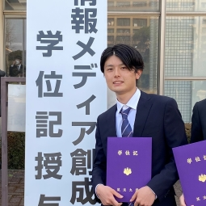

井原 圭一 - Keiichi Ihara

- 研究の興味
- Human Computer Interface
- XR (MR/AR/VR)
- 連絡先
- kihara[at]iplab.cs.tsukuba.ac.jp
- 略歴
- 2014年(平成26年)
久留米大学附設高等学校 入学 - 2017年(平成29年)
久留米大学附設高等学校 卒業 - 2018年(平成30年)
筑波大学 情報学群 情報メディア創成学類 入学 - 2022年(令和4年)
筑波大学 情報学群 情報メディア創成学類 卒業 - 2022年(令和4年)
筑波大学 大学院理工情報生命学術院 システム情報工学研究群 情報理工学位プログラム 入学
文献情報
国際会議論文(査読あり)
-
Keiichi Ihara，Ikkaku Kawaguchi
"AR Object Layout Method Using Miniature Room Generated from Depth Data",
The 32nd International Conference on Artificial Reality and Telexistence & the 27th Eurographics Symposium on Virtual Environments (ICAT-EGVE2022),
Nov30 - Dec3, 2022, 8 pages (To appear) ．採択率43.6% -
 Keiichi Ihara，Ikkaku Kawaguchi
Keiichi Ihara，Ikkaku Kawaguchi
"Virtual Object Placement in MR Space Using a 3D Miniature Model of a Room",
The 6th Asian CHI Symposium (Asian CHI Symposium 2022),
Apr13 2022, 8 pages (To appear) ．採択率44.0%
国際会議デモ(査読あり)

Ikkaku Kawaguchi，Ayumi Ichikawa，Keiichi Ihara，Ryo Ishibashi，Aoto Tanokashira，
"Hybrid Robot with Physical and AR Body Presentation",
The 32nd International Conference on Artificial Reality and Telexistence & the 27th Eurographics Symposium on Virtual Environments (ICAT-EGVE2022),
Nov30 - Dec3, 2022 (To appear) ．
"Hybrid Robot with Physical and AR Body Presentation",
The 32nd International Conference on Artificial Reality and Telexistence & the 27th Eurographics Symposium on Virtual Environments (ICAT-EGVE2022),
Nov30 - Dec3, 2022 (To appear) ．

Ayumi Ichikawa，Keiichi Ihara，Aoto Tanokashira，Ikkaku Kawaguchi
"Investigating the Effect of Animal Avatars on Users’ Self-disclosure During Interaction in VR space"，
The 32nd International Conference on Artificial Reality and Telexistence & the 27th Eurographics Symposium on Virtual Environments (ICAT-EGVE2022),
Nov30 - Dec3, 2022 (To appear) ．
"Investigating the Effect of Animal Avatars on Users’ Self-disclosure During Interaction in VR space"，
The 32nd International Conference on Artificial Reality and Telexistence & the 27th Eurographics Symposium on Virtual Environments (ICAT-EGVE2022),
Nov30 - Dec3, 2022 (To appear) ．
国内会議論文(査読あり)
-
井原圭一，川口一画
"部屋の3次元縮小モデルを用いたMR空間内における仮想オブジェクト配置"
第29回インタラクティブシステムとソフトウェアに関するワークショップ（WISS 2021），
日本ソフトウェア科学会，2021年12月8-10日，pp. 50-56．採択率57.1% PDF
PDF
学位論文
-
学士論文，学士（情報メディア科学）
部屋の3次元縮小モデルを用いたMR空間内における仮想オブジェクト配置
筑波大学 情報学群 情報メディア創成学類，2022年2月，49 pages．
PDF
表彰
- 令和3年度 筑波大学 情報学群長表彰，2022年3月25日．
インターンシップ・パートタイム
-
長期インターンシップ（3ヶ月），グリー株式会社 (GREE, Inc.)，2022/10-，
 Gree Jobs
Gree Jobs
奨学金
- 独立行政法人 日本学生支援機構（JASSO）第一種奨学金（貸与型無利子），2022年4月-
ボランティア
-
学生ボランティア，WISS2021，2021年12月8日-10日，
WISS2021
ティーチングアシスタント
- 「プログラミング入門A・B」，筑波大学情報メディア創成学類，2022年10月-